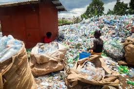
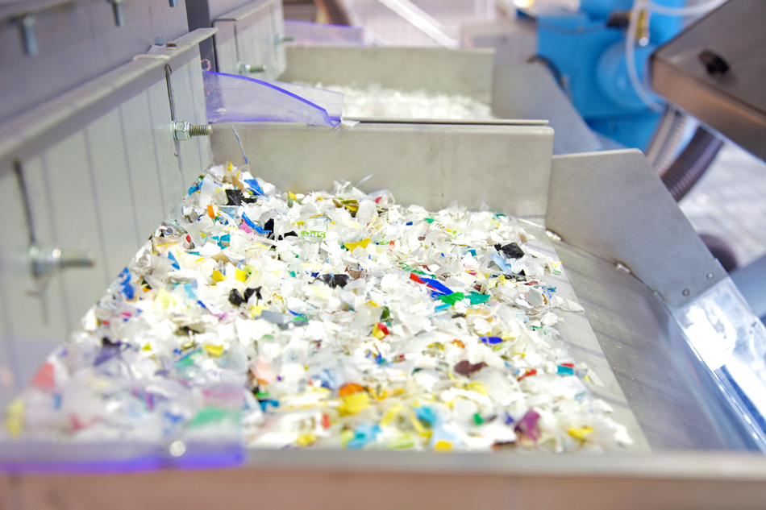

Our Process
1. Waste Collection
We collaborate with **local waste collectors, youth groups, and informal recyclers** to collect plastic waste, mainly PET bottles, from households, markets, and streets.
2. Community Sorting & Cleaning
Plastic is sorted and cleaned using **affordable, locally built machinery** made by **youth engineers from Katwe**. This ensures **low-cost and sustainable** operations.
3. Shredding & Processing
Using **low-energy shredders**, we process plastics into flakes, which are then **melted and spun into synthetic fibers**. This technique allows us to produce **recycled yarn and artificial wool** for local textile and craft industries.

4. Crafting & Textile Production
We supply **recycled yarn** to **tailors, knitters, and artisans**, helping them create sustainable products. This supports **local businesses while reducing environmental waste**.